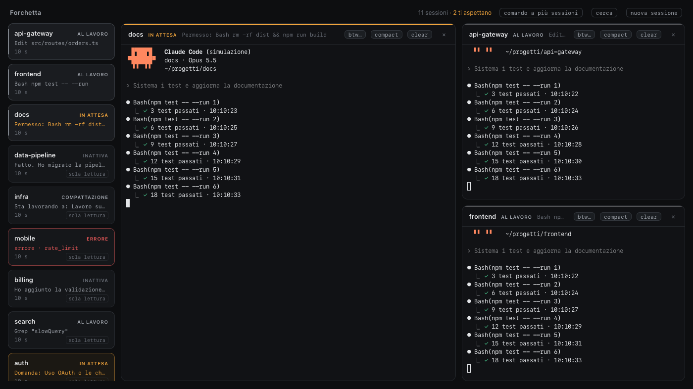
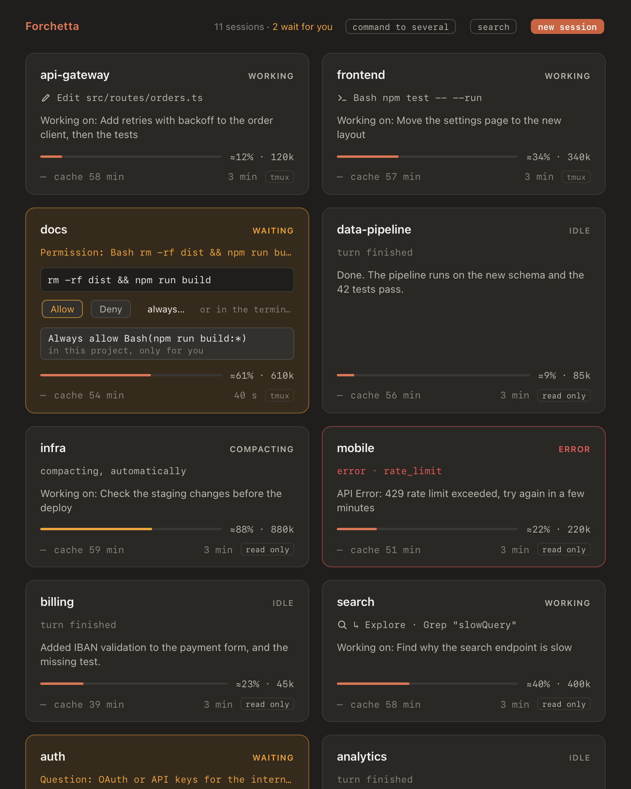
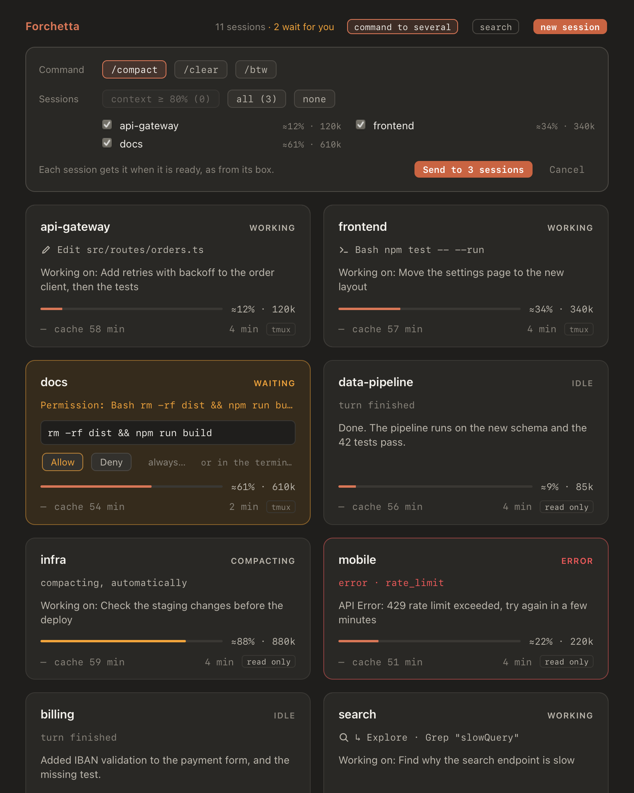
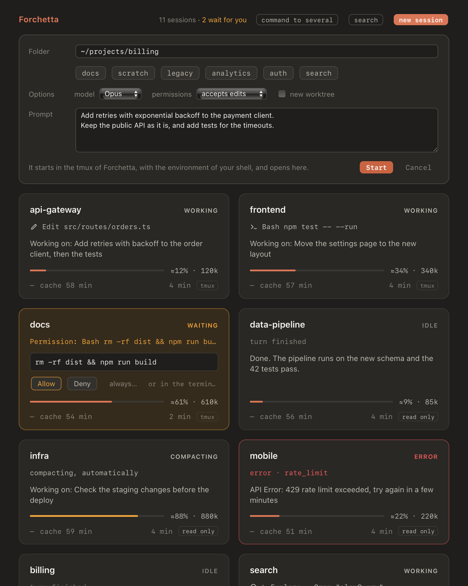
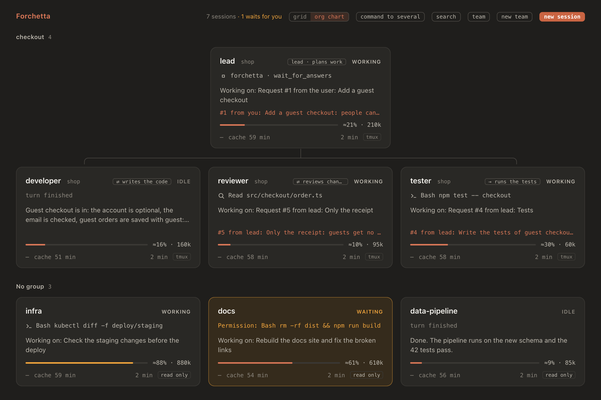
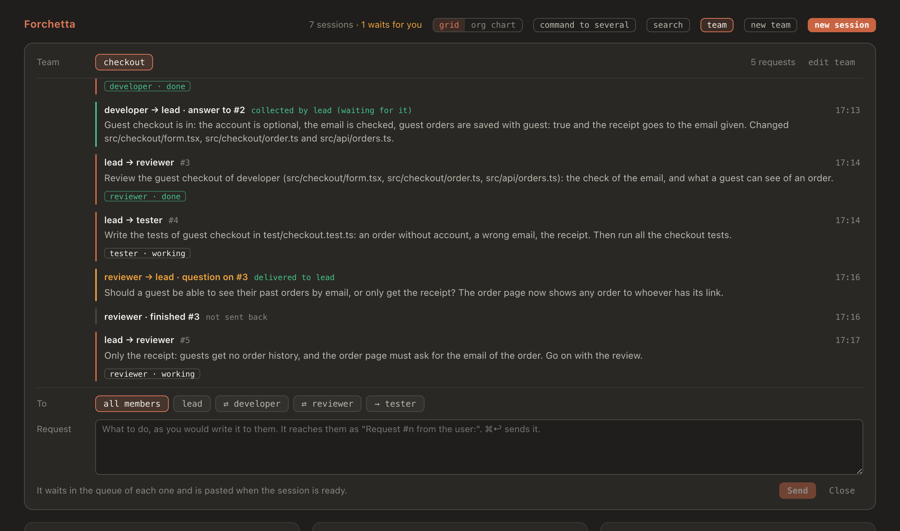

shop-api
workingEdit src/routes/orders.ts
Adding retries to the order client, then the tests.
≈42% · 420k
Keep every Claude Code session on your Mac in one window: see what each one is doing, answer its permission prompts, and get a notification when one needs you. Then put them to work as a team. A lead hands out the work, each member does its part in its own git worktree, and Forchetta warns you when two sessions write the same file.
Edit src/routes/orders.ts
Adding retries to the order client, then the tests.
Bash npm run lint
Moving the posts to the new layout.
rm -rf dist && npm run buildturn finished
Rewrote the install guide and checked every link.
compacting, as you asked
Migrating the jobs to the new schema.
Question: OAuth or API keys for internal clients?
Designing the login for the internal tools.
Bash terraform plan
Checking the staging changes before the deploy.
A replay of the app's grid, with made-up sessions. Amber means a session waits for you; the green check, that a turn just ended.
Forchetta listens to the hooks of Claude Code, so it knows what each session does the moment it does it. Sessions you start anywhere show up by themselves: in the Terminal, in iTerm, in an editor.
/cost, and the total of the day.Click a box and its terminal opens next to the others, a real one you can type in. Sessions started with forchetta run claude, or from the app, live in Forchetta's own tmux: closing a pane, or the whole app, never ends them.

/btw, /compact and /clear to one session, or to several at once. Forchetta types a command only when it is safe: the session is idle, nobody is typing, the prompt is empty.


Start a team from one panel: a lead, which is a Claude session or you, and up to six members, each a Claude Code session with its own role. The lead splits the goal into numbered requests, and each member gets its own as a new prompt as soon as it is free.


⌃⌥F.Claude Code has its own ways to run several sessions, and there are good tools built around it. Forchetta is made for one way of working: several Claude Code sessions in your terminals, on one Mac, that you want to watch and coordinate.
claude agents) is Anthropic's full-screen list of your background sessions, in the terminal. Forchetta is a window that stays open next to your work, with a live box for each session and up to four terminals side by side.claude CLI you already run in your terminal, with your hooks and settings.They don't rule each other out. Sessions started in any terminal show up in Forchetta, read only unless you started them with forchetta run claude.
The hooks talk to a small daemon that listens on 127.0.0.1 only. Your sessions are not sent anywhere. The one network call Forchetta can make is an optional one-line summary from the Claude API, off unless you turn it on.
Before it changes ~/.claude/settings.json, Forchetta shows you every change, asks, and keeps a backup. Your other hooks stay exactly as they are, and forchetta hooks uninstall takes its own away.
Everything Forchetta does, step by step: the window and its states, the terminals, the commands and when they go, the permissions, new sessions, the teams of agents, the command line, the settings and what to do when something looks wrong.
With Homebrew, on macOS 12 or later. No clone, no Xcode, no Apple account.
Install Forchetta. Homebrew brings Node.js and tmux with it:
brew install alessiodonato/tap/forchetta
Build the app on your Mac and add its hooks to Claude Code. You see every change to your settings first:
forchetta setupBuilt on your Mac, the app opens with no warning from macOS. Run it again after
brew upgrade forchetta.
Open the app. Sessions already running appear on their own.
open ~/Applications/Forchetta.appTo open a session's terminal from the app, start it with
forchetta run claude, or with New session in the app.
Forchetta works with arricurdAI too: with it, every box shows its context and when its prompt cache expires, the top shows the cost of the day, you can search earlier sessions, and a /clear from the box leaves a note for the new session. The manual explains the rest; the README has it in English and in Italian, with how to build it from source.